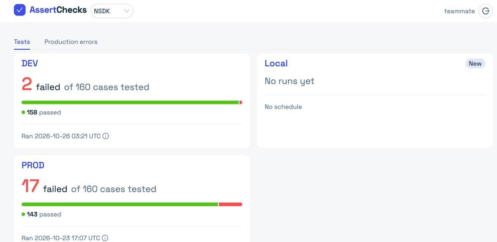
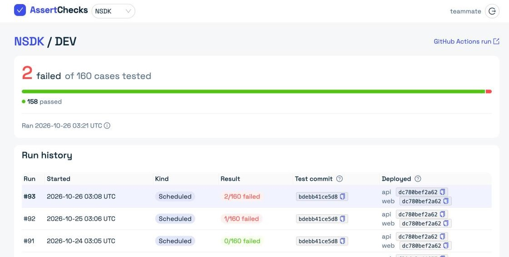
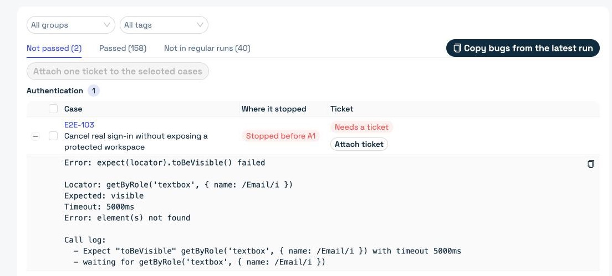
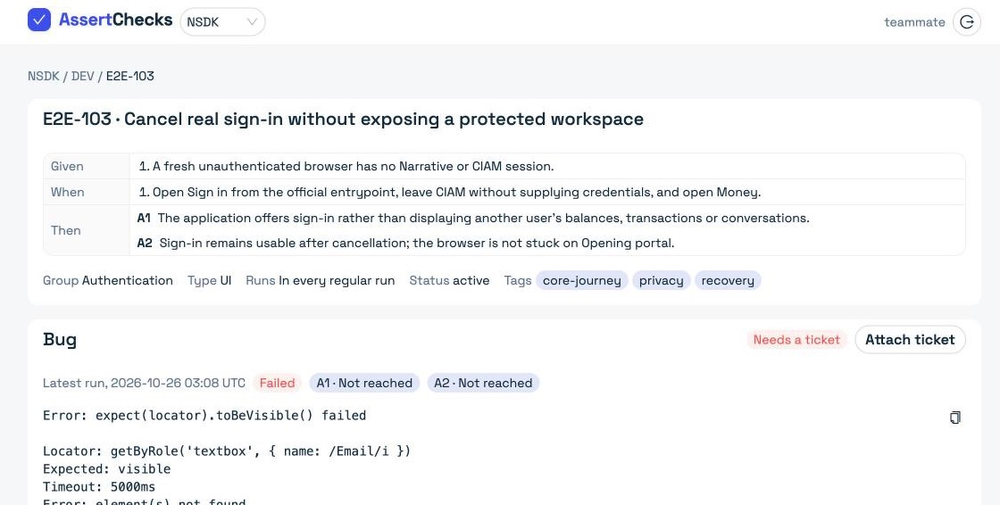
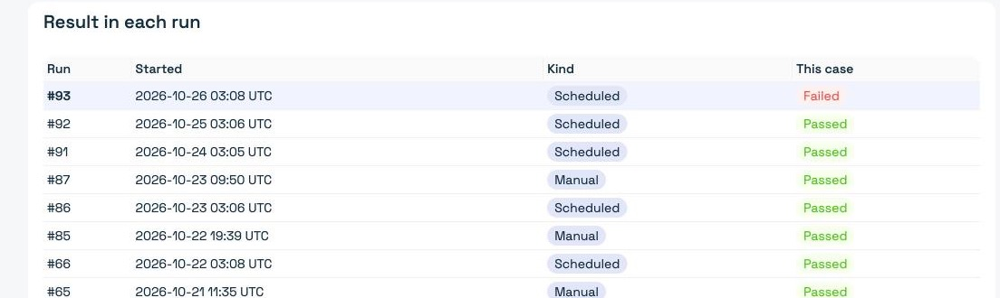
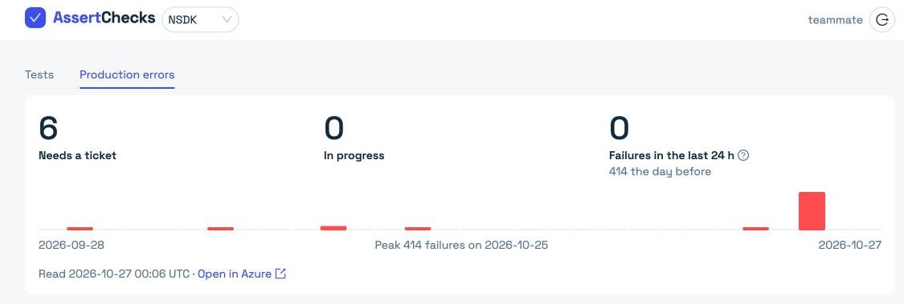
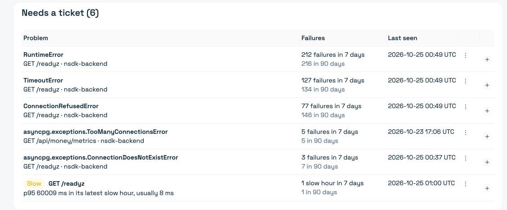

In the product
Every environment at a glance
- 1One card per environment
- 2Failures out of the cases tested
- 3When it last ran
NSDK on 2026-10-26. A real project.
Be the first to know about test failures and errors in production.
The problem
How it works
AssertChecks never runs code or reaches into your network.
No report within the expected time turns the check Late.
DEV and PROD each keep their own history.
Strict judgement
Green means every Then step of every expected case passed against the versions you deployed.
In the product
NSDK on 2026-10-26. A real project.

1 2 3In the product


1 2 3In the product


1 2 3Bugs and tickets
Production errors
In the product
NSDK production on 2026-10-27.


1 2 3How to use it
assertchecks cap0
assertchecks cap2 for the new cases
assertchecks cap7 for DEV
How to use it
assertchecks/e2e.json
tests/E2E-001.spec.ts
Expectations come from the case. They are never copied from what the product shows today.
How to use it
cap0 writes this workflow for youHow to use it
assertchecks cap7 for DEV
Ping tokens only report runs. People and their agents read and link as themselves.
Get started
Why it matters
Scheduled runs and production telemetry surface a break within hours.
Skipped cases and flaky retries never pass. Green means every assertion held.
Every failure gets a ticket and stays open until it passes twice in a row.